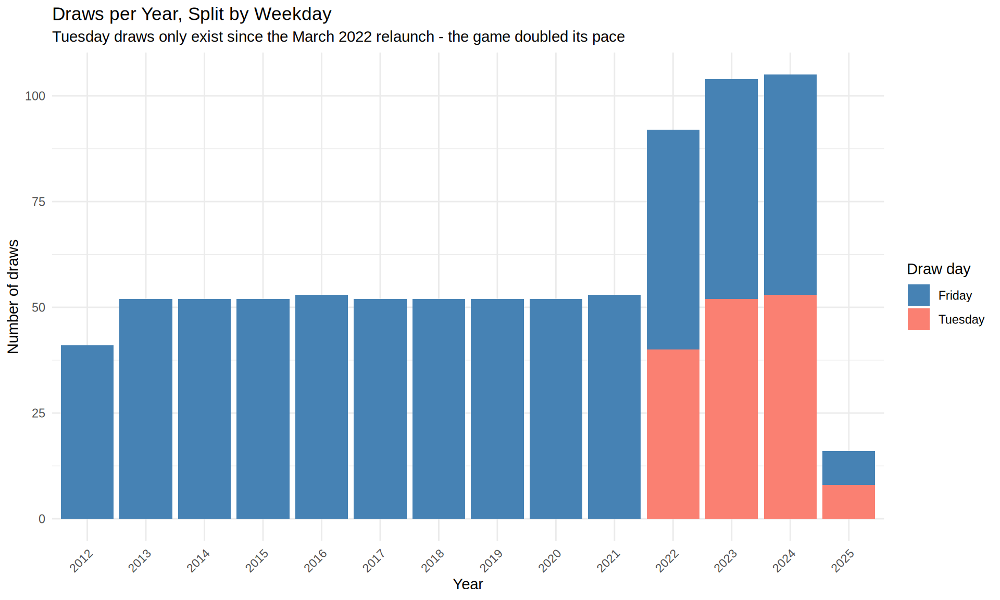
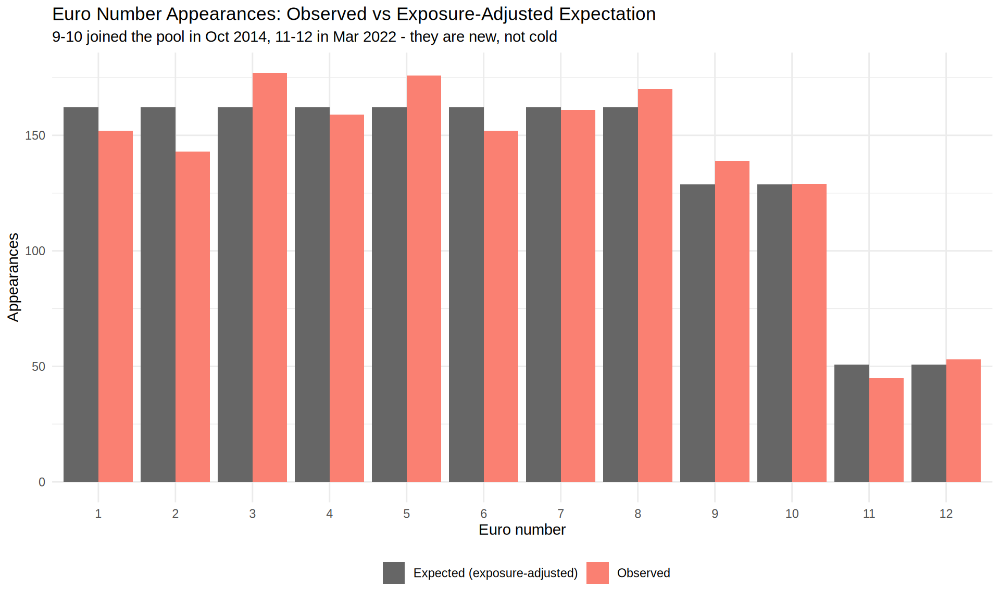
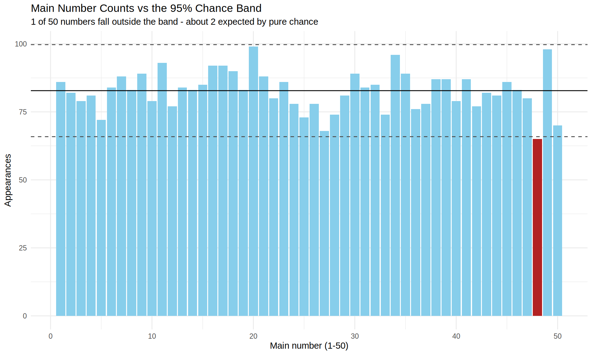
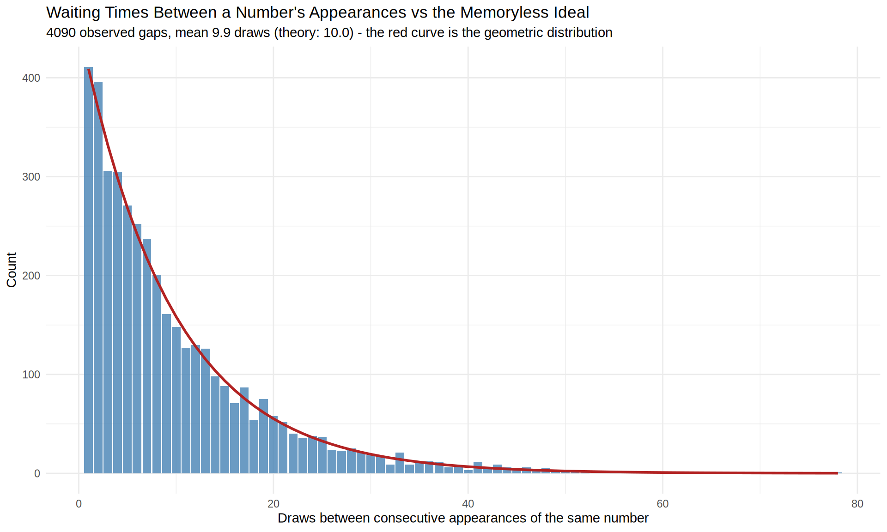
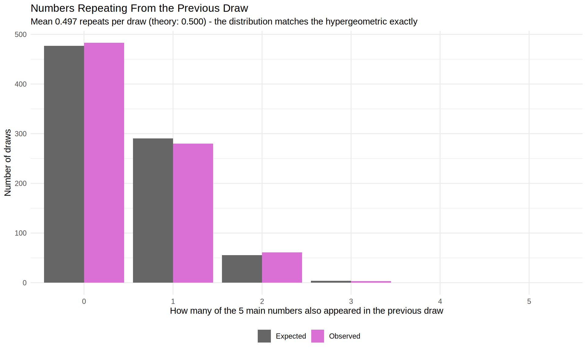
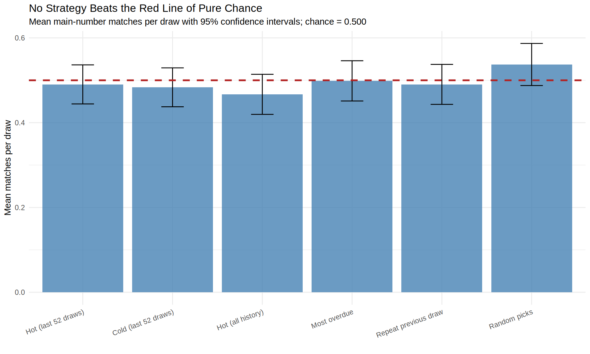
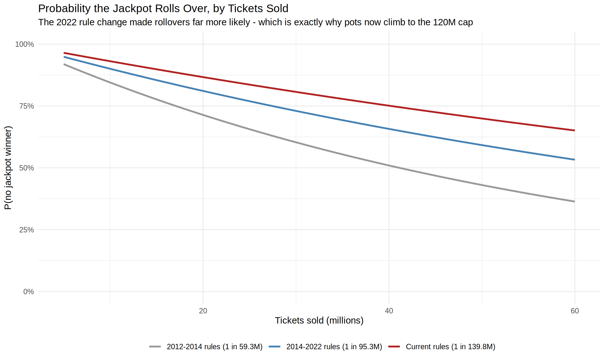

Every page of this site slices the historical draws a different way, and the obvious question behind all of them is: does any of it help predict the next draw? This page tackles that question head-on. First it shows two structural facts hiding in the data that the other pages silently ignore — and that distort their charts. Then it puts every popular prediction idea (hot numbers, cold numbers, “due” numbers, repeats) through formal statistical tests and an out-of-sample backtest. Finally, it shows the one part of the game that genuinely is predictable: not the balls, but the pot.
The dataset spans 828 draws, but it is not one homogeneous game. Eurojackpot changed its rules twice, and both changes are clearly visible in the data:
era_summary <- results %>%
group_by(Format = era) %>%
summarise(
From = format(min(draw_date), "%Y-%m-%d"),
To = format(max(draw_date), "%Y-%m-%d"),
Draws = n(),
`Draw days` = ifelse(n_distinct(weekday) == 1, "Friday only", "Tuesday + Friday"),
`Jackpot odds` = paste0(
"1 in ",
format(choose(50, 5) * choose(first(pool_size), 2), big.mark = ",", scientific = FALSE)
),
.groups = "drop"
)
knitr::kable(era_summary,
caption = "Three different games hide inside one CSV",
align = c("l", "l", "l", "r", "l", "r")
)| Format | From | To | Draws | Draw days | Jackpot odds |
|---|---|---|---|---|---|
| 5/50 + 2/8 | 2012-03-23 | 2014-10-03 | 133 | Friday only | 1 in 59,325,280 |
| 5/50 + 2/10 | 2014-10-10 | 2022-03-25 | 390 | Friday only | 1 in 95,344,200 |
| 5/50 + 2/12 | 2022-03-29 | 2025-02-25 | 305 | Tuesday + Friday | 1 in 139,838,160 |
ggplot(results, aes(x = year, fill = weekday)) +
geom_bar() +
scale_fill_manual(values = c("Friday" = "steelblue", "Tuesday" = "salmon"), name = "Draw day") +
labs(
title = "Draws per Year, Split by Weekday",
subtitle = "Tuesday draws only exist since the March 2022 relaunch - the game doubled its pace",
x = "Year", y = "Number of draws"
) +
theme_minimal() +
theme(axis.text.x = element_text(angle = 45, hjust = 1))
Why this matters for prediction-hunting:
Here is the trap in raw counts. Pooled over all 828 draws, euro number 3 has appeared 177 times and euro number 11 only 45 times — a factor of almost four, and a naive chi-squared test would declare the euro numbers wildly non-uniform. But once each number’s expectation counts only the draws where it was actually in the pool, the entire effect evaporates:
euro_obs <- tabulate(c(results$euro_1, results$euro_2), nbins = 12)
# Expected appearances of number x = sum over draws where x was in the pool of 2/pool_size
euro_expected <- sapply(1:12, function(x) sum((2 / results$pool_size)[results$pool_size >= x]))
euro_df <- data.frame(
number = factor(1:12),
Observed = euro_obs,
`Expected (exposure-adjusted)` = euro_expected,
check.names = FALSE
) %>%
pivot_longer(cols = -number, names_to = "type", values_to = "count")
ggplot(euro_df, aes(x = number, y = count, fill = type)) +
geom_col(position = "dodge") +
scale_fill_manual(values = c("Observed" = "salmon", "Expected (exposure-adjusted)" = "grey40"), name = "") +
labs(
title = "Euro Number Appearances: Observed vs Exposure-Adjusted Expectation",
subtitle = "9-10 joined the pool in Oct 2014, 11-12 in Mar 2022 - they are new, not cold",
x = "Euro number", y = "Appearances"
) +
theme_minimal() +
theme(legend.position = "bottom")
chi_naive_stat <- sum((euro_obs - 2 * n / 12)^2 / (2 * n / 12))
chi_adj_stat <- sum((euro_obs - euro_expected)^2 / euro_expected)
chi_table <- data.frame(
Test = c(
"Naive: every number expected equally often (ignores pool changes)",
"Exposure-adjusted: expectation counts only draws where the number was in the pool"
),
`Chi-squared` = sprintf("%.1f", c(chi_naive_stat, chi_adj_stat)),
df = c(11, 11),
`p-value` = sapply(
pchisq(c(chi_naive_stat, chi_adj_stat), df = 11, lower.tail = FALSE),
function(p) if (p < 1e-4) sprintf("%.1e", p) else sprintf("%.2f", p)
),
Verdict = c(
"\"Significant\" - but it is an artifact",
"Perfectly consistent with a fair machine"
),
check.names = FALSE
)
knitr::kable(chi_table,
caption = "The same data, tested twice - only the adjusted test is valid",
align = c("l", "r", "r", "r", "l")
)| Test | Chi-squared | df | p-value | Verdict |
|---|---|---|---|---|
| Naive: every number expected equally often (ignores pool changes) | 154.6 | 11 | 1.7e-27 | “Significant” - but it is an artifact |
| Exposure-adjusted: expectation counts only draws where the number was in the pool | 8.1 | 11 | 0.71 | Perfectly consistent with a fair machine |
The apparent structure was never in the balls; it was in the bookkeeping. This is the single biggest correction to take away for the frequency charts elsewhere on this site.
The main-number format (5 out of 50) has never changed, so here raw counts are fair to compare. The frequency pages rank “hottest” and “coldest” numbers — but is the spread between them bigger than pure chance would produce? Under a fair machine each number should appear about 82.8 times, with a 95% chance band of roughly ±17:
main_obs <- tabulate(as.integer(mains), nbins = 50)
expected_main <- 5 * n / 50
band <- 1.96 * sqrt(n * 0.1 * 0.9) # binomial sd of one number's count over n draws
main_df <- data.frame(number = 1:50, count = main_obs)
outside <- sum(main_df$count < expected_main - band | main_df$count > expected_main + band)
chisq_main <- chisq.test(main_obs)
ggplot(main_df, aes(x = number, y = count)) +
geom_col(fill = ifelse(main_df$count < expected_main - band | main_df$count > expected_main + band,
"firebrick", "skyblue"
)) +
geom_hline(yintercept = expected_main, color = "black") +
geom_hline(yintercept = c(expected_main - band, expected_main + band), linetype = "dashed", color = "grey30") +
labs(
title = "Main Number Counts vs the 95% Chance Band",
subtitle = sprintf(
"%d of 50 numbers fall outside the band - about %.0f expected by pure chance",
outside, 50 * 0.05
),
x = "Main number (1-50)", y = "Appearances"
) +
theme_minimal()
The result: 1 number(s) poke marginally outside the band, versus ~2-3 expected as false positives from chance alone. The formal chi-squared test across all 50 numbers gives χ² = 31.2 on 49 degrees of freedom, p = 0.98 — not even close to significant. The gap between the “hottest” number (20, seen 99 times) and the “coldest” (48, seen 65 times) is exactly the spread a perfectly fair machine produces over 828 draws. Hot and cold rankings carry zero signal about the next draw.
The most seductive prediction idea: “number X hasn’t appeared for ages, it must be due.” If that were true, waiting times between a number’s appearances would be shorter than the memoryless ideal. Each number has a 5/50 = 10% chance per draw, so under true randomness gaps should follow a geometric distribution with mean 10:
gap_list <- lapply(1:50, function(x) diff(which(rowSums(mains == x) > 0)))
gaps <- unlist(gap_list)
gap_counts <- as.data.frame(table(gaps), stringsAsFactors = FALSE)
gap_counts$gaps <- as.integer(gap_counts$gaps)
geo <- data.frame(
gap = 1:max(gaps),
expected = length(gaps) * dgeom(0:(max(gaps) - 1), prob = 0.1)
)
ggplot() +
geom_col(data = gap_counts, aes(x = gaps, y = Freq), fill = "steelblue", alpha = 0.8) +
geom_line(data = geo, aes(x = gap, y = expected), color = "firebrick", linewidth = 1) +
labs(
title = "Waiting Times Between a Number's Appearances vs the Memoryless Ideal",
subtitle = sprintf(
"%d observed gaps, mean %.1f draws (theory: 10.0) - the red curve is the geometric distribution",
length(gaps), mean(gaps)
),
x = "Draws between consecutive appearances of the same number", y = "Count"
) +
theme_minimal()
The observed gaps hug the geometric curve, including its long tail — the longest drought in the dataset is 78 draws. And here is the direct backtest of “due”: across the whole history, every time a number had been absent for 15 or more draws, did it hit the very next draw more than the baseline 10%?
last_seen <- rep(NA_integer_, 50)
overdue_trials <- 0
overdue_hits <- 0
for (i in 1:n) {
if (i > 1) {
gap_now <- (i - 1) - last_seen
over <- which(!is.na(last_seen) & gap_now >= 15)
overdue_trials <- overdue_trials + length(over)
overdue_hits <- overdue_hits + length(intersect(over, mains[i, ]))
}
last_seen[mains[i, ]] <- i
}
overdue_now <- data.frame(number = 1:50, draws_since = n - sapply(
1:50,
function(x) max(which(rowSums(mains == x) > 0))
))
overdue_now <- head(overdue_now[order(-overdue_now$draws_since), ], 6)
knitr::kable(overdue_now,
caption = sprintf(
"Most overdue main numbers as of the last draw in the dataset (%s)",
format(max(results$draw_date), "%Y-%m-%d")
),
col.names = c("Main number", "Draws since last seen"),
row.names = FALSE, align = c("r", "r")
)| Main number | Draws since last seen |
|---|---|
| 5 | 50 |
| 13 | 33 |
| 6 | 27 |
| 24 | 24 |
| 8 | 23 |
| 4 | 21 |
Result: overdue numbers hit the next draw 833 times in 8,366 opportunities = 9.96%, against a pure-chance baseline of 10.00%. Being overdue changes nothing. The numbers at the top of the table above are exactly as likely as any other number next draw: 10%.
Two quick memory checks the other pages never run. First, how many main numbers repeat from one draw to the next? If draws are independent, the count of repeats follows a hypergeometric distribution with mean 0.5:
rep_counts <- sapply(2:n, function(i) length(intersect(mains[i, ], mains[i - 1, ])))
rep_df <- data.frame(
k = factor(0:5),
Observed = as.integer(table(factor(rep_counts, levels = 0:5))),
Expected = dhyper(0:5, 5, 45, 5) * (n - 1)
) %>%
pivot_longer(cols = -k, names_to = "type", values_to = "count")
ggplot(rep_df, aes(x = k, y = count, fill = type)) +
geom_col(position = "dodge") +
scale_fill_manual(values = c("Observed" = "orchid", "Expected" = "grey40"), name = "") +
labs(
title = "Numbers Repeating From the Previous Draw",
subtitle = sprintf(
"Mean %.3f repeats per draw (theory: 0.500) - the distribution matches the hypergeometric exactly",
mean(rep_counts)
),
x = "How many of the 5 main numbers also appeared in the previous draw", y = "Number of draws"
) +
theme_minimal() +
theme(legend.position = "bottom")
Second, serial correlation: does a high-sum draw tend to follow a high-sum draw?
The lag-1 autocorrelation of the draw sums is 0.0047, comfortably inside the ±0.068 band that pure noise would produce. The machine has no memory — neither at the level of individual balls nor at the level of whole draws.
Statistical tests can feel abstract, so here is the concrete version. We walk through history draw by draw: at each point, five popular strategies pick 5 main numbers using only information available before that draw, and we count how many they match. Any real predictive signal must beat the theoretical chance level of 0.500 matches per draw:
set.seed(42)
start <- 105 # first predicted draw; the preceding 104 draws (2 years) are the warm-up history
strategies <- c(
"Hot (last 52 draws)", "Cold (last 52 draws)", "Hot (all history)",
"Most overdue", "Repeat previous draw", "Random picks"
)
bt <- matrix(NA_real_, nrow = n - start + 1, ncol = length(strategies), dimnames = list(NULL, strategies))
freq_all <- tabulate(as.integer(mains[1:(start - 1), ]), nbins = 50)
last_seen <- rep(0L, 50)
for (i in 1:(start - 1)) last_seen[mains[i, ]] <- i
row <- 0
for (i in start:n) {
row <- row + 1
freq_window <- tabulate(as.integer(mains[(i - 52):(i - 1), ]), nbins = 50)
picks <- list(
order(-freq_window)[1:5], # hottest in the last year
order(freq_window)[1:5], # coldest in the last year
order(-freq_all)[1:5], # hottest over all history
order(last_seen)[1:5], # longest absent
mains[i - 1, ], # previous draw repeats
sample(1:50, 5) # random baseline
)
bt[row, ] <- sapply(picks, function(p) length(intersect(p, mains[i, ])))
freq_all[mains[i, ]] <- freq_all[mains[i, ]] + 1L
last_seen[mains[i, ]] <- i
}
bt_summary <- data.frame(
Strategy = colnames(bt),
`Mean matches per draw` = sprintf("%.3f", colMeans(bt)),
`95% CI` = sprintf("± %.3f", 1.96 * apply(bt, 2, sd) / sqrt(nrow(bt))),
`Draws with at least 1 match` = sprintf("%.1f%%", 100 * colMeans(bt >= 1)),
check.names = FALSE
)
knitr::kable(bt_summary,
caption = sprintf(
"Walk-forward backtest over %d draws. Chance level: 0.500 mean matches, %.1f%% with at least one match",
nrow(bt), 100 * (1 - choose(45, 5) / choose(50, 5))
),
align = c("l", "r", "r", "r")
)| Strategy | Mean matches per draw | 95% CI | Draws with at least 1 match |
|---|---|---|---|
| Hot (last 52 draws) | 0.490 | ± 0.046 | 42.1% |
| Cold (last 52 draws) | 0.483 | ± 0.046 | 41.3% |
| Hot (all history) | 0.467 | ± 0.047 | 38.7% |
| Most overdue | 0.499 | ± 0.047 | 42.1% |
| Repeat previous draw | 0.490 | ± 0.047 | 41.0% |
| Random picks | 0.537 | ± 0.050 | 43.9% |
ci <- 1.96 * apply(bt, 2, sd) / sqrt(nrow(bt))
bt_plot <- data.frame(strategy = factor(colnames(bt), levels = colnames(bt)), mean = colMeans(bt), ci = ci)
ggplot(bt_plot, aes(x = strategy, y = mean)) +
geom_col(fill = "steelblue", alpha = 0.8) +
geom_errorbar(aes(ymin = mean - ci, ymax = mean + ci), width = 0.25) +
geom_hline(yintercept = 0.5, color = "firebrick", linetype = "dashed", linewidth = 1) +
labs(
title = "No Strategy Beats the Red Line of Pure Chance",
subtitle = "Mean main-number matches per draw with 95% confidence intervals; chance = 0.500",
x = "", y = "Mean matches per draw"
) +
theme_minimal() +
theme(axis.text.x = element_text(angle = 20, hjust = 1))
Every strategy — including the ones people pay for in “lottery systems” — lands within noise of 0.500, and in this run the purely random picks happen to edge out all four “informed” strategies. That is not a joke; it is the point. Nothing computable from past draws moves the odds of the next one.
Here is the constructive twist. The winning numbers are unpredictable, but the pot — the thing you actually care about — is largely governed by known mechanics, and this dataset is one column short of modelling it.
The jackpot rolls over when nobody matches 5+2. The probability of that depends only on jackpot odds (fixed by the rules era, see Section 1) and tickets sold:
odds_by_era <- c(
"2012-2014 rules (1 in 59.3M)" = choose(50, 5) * choose(8, 2),
"2014-2022 rules (1 in 95.3M)" = choose(50, 5) * choose(10, 2),
"Current rules (1 in 139.8M)" = choose(50, 5) * choose(12, 2)
)
rollover <- expand.grid(
tickets = seq(5e6, 60e6, by = 2.5e5),
era = names(odds_by_era),
stringsAsFactors = FALSE
)
rollover$era <- factor(rollover$era, levels = names(odds_by_era))
rollover$p_rollover <- (1 - 1 / odds_by_era[as.character(rollover$era)])^rollover$tickets
ggplot(rollover, aes(x = tickets / 1e6, y = p_rollover, color = era)) +
geom_line(linewidth = 1) +
scale_y_continuous(labels = function(x) paste0(round(100 * x), "%"), limits = c(0, 1)) +
scale_color_manual(values = c("grey60", "steelblue", "firebrick"), name = "") +
labs(
title = "Probability the Jackpot Rolls Over, by Tickets Sold",
subtitle = "The 2022 rule change made rollovers far more likely - which is exactly why pots now climb to the 120M cap",
x = "Tickets sold (millions)", y = "P(no jackpot winner)"
) +
theme_minimal() +
theme(legend.position = "bottom")
With ~30 million tickets sold, the current rules roll the jackpot over about 81% of the time — under the 2012 rules that figure was 60%. Long rollover chains, and therefore giant pots, are a designed-in feature of the current format, not luck. Given the current pot, the rollover streak and a sales estimate, next-draw pot size is a genuinely forecastable quantity — the kind of prediction this dataset could support but currently cannot:
The missing column: this CSV records only dates and numbers. To actually model the pot, the scraper should also capture per draw: jackpot amount, number of jackpot winners, and ideally prize-tier winner counts (a proxy for tickets sold). With those three columns, “predict the next pot” becomes a real regression problem with the rollover curve above as its backbone.